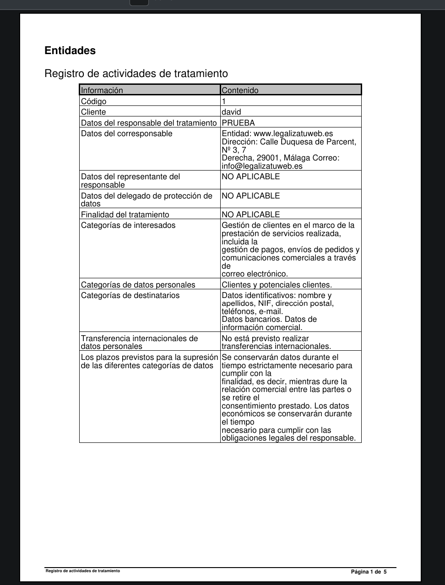

Este es el panel de creación e impresión de otros documentos:
Se puede seleccionar evaluaciones de impacto, riesgos del tratamiento y medidas de seguridad
Y se visualizarán los documentos en pdf que luego puede imprimir si desea
